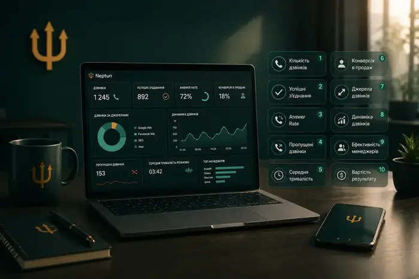

Neptun
Neptun Як підключити
Як підключити Можливості та функції
Можливості та функції Віртуальні номери
Віртуальні номери Інтеграції з CRM
Інтеграції з CRM Тарифи на віртуальну АТС
Тарифи на віртуальну АТС Номери, які підвищують довіру клієнтів
Номери, які підвищують довіру клієнтів Номери з SMS, API та автоматизацією
Номери з SMS, API та автоматизацією Для колл-центрів та вихідних кампаній
Для колл-центрів та вихідних кампанійЯк контролювати роботу менеджерів за дзвінками: 10 показників, які варто відстежувати

«Менеджери багато телефонують» — це ще не аналітика
100 дзвінків на день можуть виглядати добре. Але якщо з них лише 5 якісних розмов — кількість дзвінків нічого не означає.
Тому керівнику потрібно дивитися не тільки на обсяг, а й на результат.
10 показників, які варто відстежувати
- Кількість дзвінків — скільки дзвінків зробив кожен менеджер
- Кількість успішних з’єднань — скільки контактів реально відбулися
- Answer Rate — яка частина дзвінків була прийнята
- Пропущені дзвінки — скільки потенційних клієнтів не отримали відповіді
- Середня тривалість розмови — допомагає оцінювати якість комунікації, але не повинна бути KPI сама по собі
- Час до першого контакту — особливо важливо для гарячих лідів
- Конверсія дзвінок → продаж — один із найважливіших показників
- Конверсія по менеджерах — дозволяє бачити різницю між результативністю співробітників
- Результат за джерелами — які рекламні канали приводять найбільш якісні дзвінки
- Вартість результативного контакту — допомагає оцінювати реальну ефективність маркетингу
Сучасні віртуальні АТС уже дозволяють вести журнали дзвінків, записи та звіти за співробітниками й різними показниками.
Головне
Телефонія повинна відповідати не на питання «Скільки ми сьогодні дзвонили?», а на питання «Скільки грошей принесли ці дзвінки?»
Хочете так само у своєму бізнесі?
Підключення за 15 хвилин, без документів і KYC.
Отримати консультацію →Інші статті за темою

Віртуальна АТС для бізнесу: що це, як працює та навіщо вона відділу продажів
Якщо у компанії вже не один менеджер, десятки або сотні дзвінків на день, кілька рекламних каналів та CRM, звичайного мобільного телефону стає недостатньо.


Як не втрачати лідів через пропущені дзвінки: 7 проблем відділу продажів
Клієнт залишив заявку. Менеджер не відповів. Що робить клієнт? У більшості випадків — телефонує конкуренту.

Автодайлер для відділу продажів: як менеджерам робити більше дзвінків
Знайти номер → скопіювати → вставити → набрати → почекати → почути «зайнято» → записати результат. І так сотні разів. Це не продажі, це ручна робота.